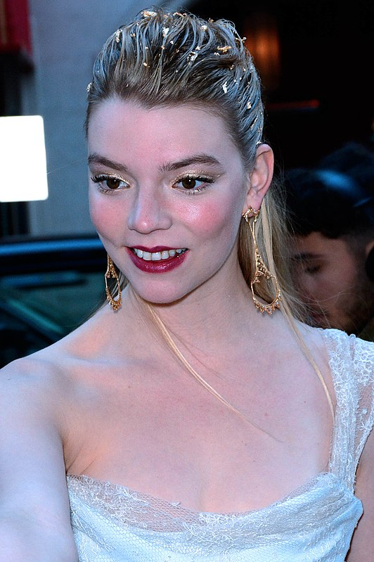
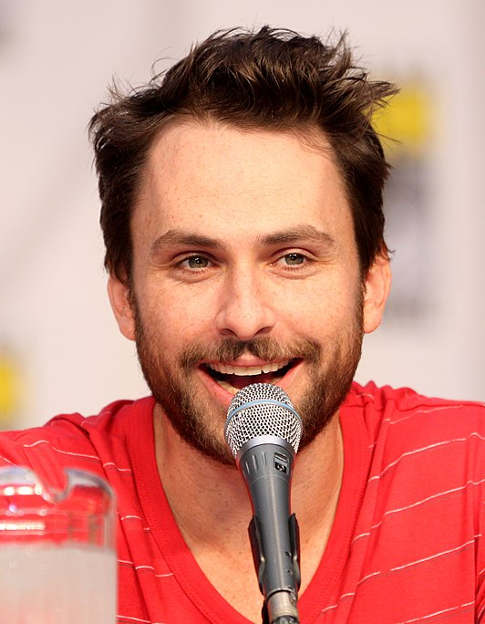
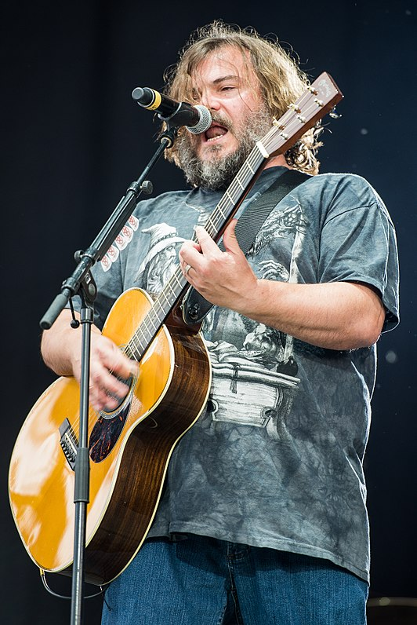
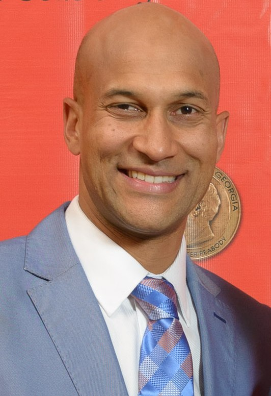
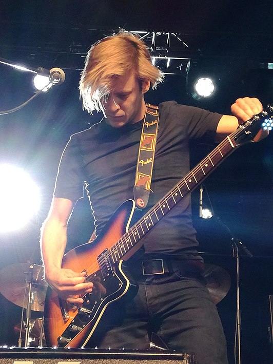
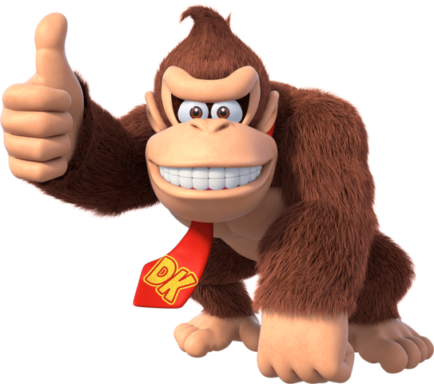

Rolverdeling
Ik ga enkel de hoofdkarakters oplijsten en enkele side-karakters vanwege de samengevoegde cellen requirement.
| Personage | Engelse stem | Nederlandse stem | Vlaamse stem |
|---|---|---|---|
Mario

|
Chris Pratt | Florus van Rooijen | Lander Severins |
Princess Peach

|
Anya Taylor-Joy  |
Vajèn van den Bosch

|
Lotte De Clerck |
Luigi

|
Charlie Day  | Thijs van Aken | Geerard Van de Walle |
Bowser

|
Jack Black  | Marcel Jonker | Govert Deploige |
Toad

|
Keegan-Michael Key  | Juliann Ubbergen | Jonas Vermeulen  |
| Donkey Kong  | Seth Rogen | Milan van Weelden | Pieter-Jan De Paepe |
| Cranky Kong | Fred Armisen | Huub Dikstaal | Jan De Smet |
| Kamek | Kevin Michael Richardson | Reinder van der Naalt | Peter Van Gucht |
| Foreman Spike | Sebastian Maniscalco | Jenne Decleir | Jenne Decleir |
| Toad Generaal Dry Bones Koopa Troopa soldaten |
Eric Bauza | Eric Bauza | Eric Bauza |
| Penguin King | Khary Payton | Murth Mossel | |
| Mario en Luigi's moeder Gele Toad |
Jessica DiCicco |